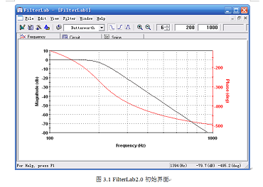
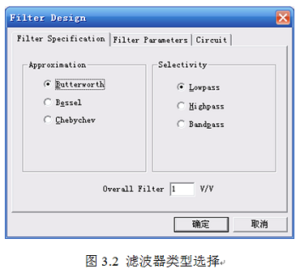
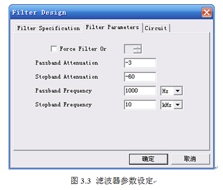
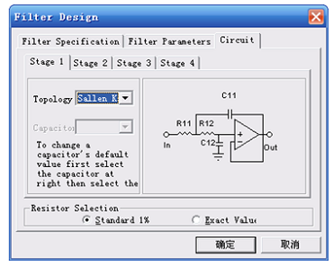
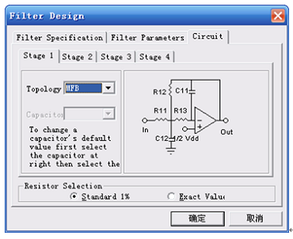
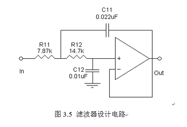
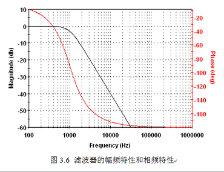
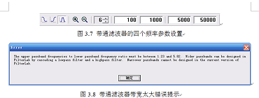
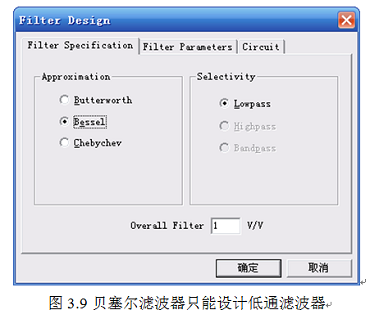
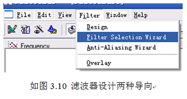

利用模拟滤波器设计软件FilterLab 2.0，初步模拟滤波器的设计方法。
设计一个低通滤波器，具体指标要求如下：
①转折频率：fP=1000HZ，-3dB；
②通带增益：AV=2，（GAV=6dB）；
③阻带衰减：10KHZ，-60dB。
FilterLab2.0是美国Microchip公司推出的一款创新的滤波器免费下载软件。使用该软件避免了传统滤波器设计的繁琐计算，使设计大大简化。
该软件所设计的滤波器具有：
（1）巴特沃斯、贝塞尔、切比雪夫三种类型，其中贝塞尔只有LPF一类滤波器；
（2）阶数1~8；
（3）增益1~10；
（4）LPF、BPF、HPF三种类型；
（5）有塞林凯和多重反馈二种电路形式；
（6）通带截止频率（Passband frequency）：0.1Hz~1MHz；
（7）品质因素Q：0.5~5.0；
（8）阻带衰减（Stopband Attenuation）：10dB~100dB。
软件安装：通过公司官方网站或公网多数都可以免费下载（略）。
1、在程序里面找到Microchip Technology, Inc→FilterLab，单击启动FilterLab，初始 界面如图3.1所示（图中为6阶巴特沃斯低通滤波器，转折频率200Hz，阻带频率1000Hz）。
界面分别为“菜单栏”、“工具栏”、“设计窗口”，其中设计窗口又分为“频率特性（Frequency）”、“电路图（Circuit）”、“Spice模型” 三个选项，工具栏中有滤波器的一些基本参数设定，如滤波器类型、阶数、转折频率等（详细的参数设定通过菜单栏“Filter滤波器”完成），
2、设定参数
单击菜单栏“Filter滤波器”→“Design设计”，出现如图3.2对话框，选择“Butterworth” 巴特沃斯）“Lowpass”（低通）滤波器，“Overall Filter”（增益）修改为“2”。 打开“Filter Parameters”（滤波器特性）选项，如图3.3所示。将“Passband Att enuation”（带宽衰减）设定为“-3dB”，“Stop Attenuation”（阻带衰减）设定为“-6 0dB”，“Passband Frequency”（带宽频率）设定为“1000Hz”，“Stop Frequency”（阻带频率 ）设定为“10KHz”。这样软件将自动确定滤波器的“阶数”。若需要手动设置，可以勾选“Force F ilter Or”，这时阻带特性将不能输入（系统自动按照1阶-20dB/OCT，2阶-40dB/OCT累加）。OCT：10倍频程。
 继续打开“Circuit（滤波器电路反馈形式）选项，如图3.4所示。有“Sallen Key”（塞林凯）和“MFB”（多重反馈）二种电路形式，通 常前一种用于双电源供电的系统比较方便，后一种则用于单电源系统比较方便，但是同相端静态工 作点应该设置为电源电压的一半。最下面为电阻误差等级的选择，一般选择小误差“1%”。
 现选择塞林凯电路反馈方式（第一级，1阶，最多可选择四级，8阶），单击“确定”即可完成设计。
3、设计结果的运用
通过“Edit（编辑）”复制设计电路图如图3.5所示，幅频特性如图3.6所示。电路中的运放需要自行选取具体型号。
 若需要进一步验证设计结果，可以利用实验二进行电路仿真。至于“Spice模型”可以应用于其他支持的仿真软件。至此，设计结束。
4、几点说明
（1）当设计带通滤波器时，工具栏中的四个值分别是“Stopband Lower”（低端阻带频率）、“Passband Lower”（低端转折频率 ）、“Passband Upper”（高端转折频率）、“Stopband Upper”（高端阻带 频率）四个参数。如图3.7所示。当带宽太大时，系统会提示你采用高通与低通串联的方式解决（高端转折频率∶低端转折 频率=1.23~5.82之间）。如图3.9所示。
（2）贝塞尔滤波器只能设计低通滤波器，如图3.9所示。
（3）滤波器的输入阻抗没有要求，因此前级最好采用低内阻信号源。滤波器的输出阻抗很低 ，一般都可以驱动后级负载。另外，对Q值的设计（带通）软件中也没有具体涉及到，因为 在带宽设定、衰减特性设定过程中，就包含了Q值参数的应用（图3.8提示）。
（4）在滤波器设计导向中，也可以按照导向很快完成设计，其中第二种专用于AD转换前的滤波。如图3.10所示。同学们可以自行练习。
